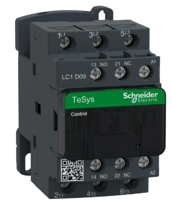

Contactors
A contactor is an electrically-controlled switch used to switch a high-power electrical load (AC or DC) using a low-power control signal. It is commonly used to control motors, heaters, lighting, and other industrial equipment.
Working Principle
- When a control voltage is applied to the coil, it creates a magnetic field.
- The magnetic field pulls the contacts together, closing the circuit and allowing current to flow to the load.
- When the coil is de-energized, the contacts return to their default position (open or closed depending on the design).
How to wire a contactor?
- Coil terminals:
- On the front of the contactor, you’ll see two wire terminals of A1 and A2. This is
where we can connect a 24-volt DC power to the coil to energize it.

- The 24-volt DC positive signal wire is connected to the A1 wire terminal, and the 24-volt DC negative signal wire is connected to the A2 wire terminal.
- We’re connecting 24-volt DC power to these terminals because the coil works with 24-volt DC power for this electrical contactor.
- On the front of the contactor, you’ll see two wire terminals of A1 and A2. This is
where we can connect a 24-volt DC power to the coil to energize it.
- Contacts terminals:
- We have six other wire terminals on the contactor's other side. The wire terminals on the top are labelled from left to right with L1, L2, and L3, and the wire terminals on the bottom are labelled from left to right with T1, T2, and T3.
- The L1, L2, and L3 terminals are connected to the line or the power supply wires.
The T1, T2, and T3 terminals are where the device or load wires are connected.

- When the coil is energized, the L1 contact connects to the T1 contact, the L2 contact connects to the T2 contact, and the L3 contact connects to the T3 contact.
- The contactor contacts are normally open; therefore, the device will be off with the
coil de-energized. When the coil is energized, the device will power on.

- Auxiliary or feedback contact terminals:
- As you can see, we have another set of wire terminals on the front end labeled as
NO or normally open. This is a simple normally open contact referred to as an
auxiliary contact or a feedback contact.

- As you can see, we have another set of wire terminals on the front end labeled as
NO or normally open. This is a simple normally open contact referred to as an
auxiliary contact or a feedback contact.
How to wire a contactor to the PLC and motor
- To control a motor using a PLC through a contactor, you need to connect the PLC output to the coil to be able to energize and de-energize it.
- You connect a 3-phase power supply to L1, L2, and L3 from one end, and then from the other end, you connect T1, T2, and T3 to the motor.
- To be notified when the contactor is broken, you need to connect this auxiliary or feedback contact to the PLC input.
- You also need a start and stop switch to be connected to the PLC input. This way, when you press the start switch, the coil will be energized, the contacts will be closed and the motor will be turned on. When this happens, the feedback contact will be closed as well and a signal will be sent to the PLC input, telling us that the contactor is working properly.
- When you press the stop switch, the coil will be de-energized, the contact will open and the motor will turn off.